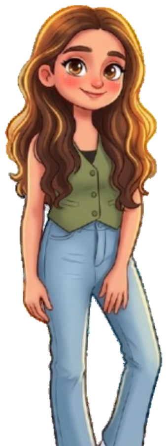

Currently pursuing a Master's in Web Engineering at TU Chemnitz — I like turning data into exciting projects with real-world use.
Click an endpoint to run it.

Hello! Super nice to meet you 👋
I work end-to-end — from raw, messy data to clean analysis, clear dashboards, and machine-learning models that actually hold up outside a notebook. What I enjoy most is the moment a chart or a prediction changes what a team decides to do next.
My recent projects span applied ML (RAG systems with local LLMs, time-series forecasting, and real-time anomaly detection) and the visualization layer that makes it usable — Tableau, Grafana, and live React/D3 dashboards, with Python, SQL, FastAPI, and MLflow underneath.